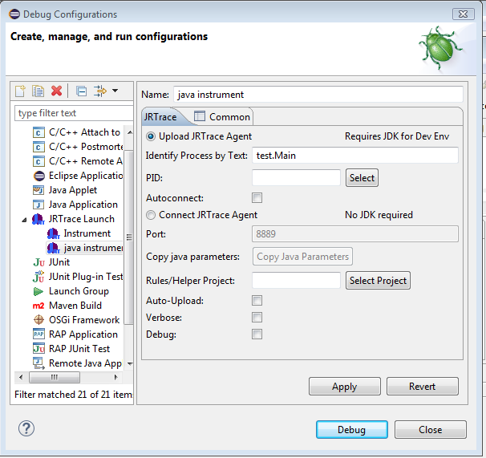
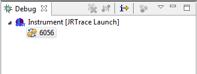
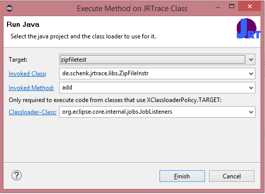

Careful: JRTrace is invasive: it instruments the code and it is easy to inject wrong code that spoils application logic!
The Use Case: You have a huge java application that is running already and you just want to have a quick peek at the return value of some method and a short trace statement in another, because there is this tiny little problem that needs solving...
The Problem: the application is huge and takes long to start, or it cannot be stopped (because it's a server) or if you can restart it you don't know how to pass in the right parameters to the JVM to load a debug client. And if you can debug, maybe this is not sufficient because after all what you need is tracing and for that you also need the source code, but you need the source code of this particular product and if you want to modify the code you need to compile the classes, replace the classes in the productive system, or start the application under the debugger control so you can do hot code replace. Then you want to know why the same problem was not there in that other version of your huge application and you need the new code and basically include again the same tracing code. Later you need to get rid of the tracing code, make it possible to enable/disable it or store it somewere else to inject it in the same code later again.
The Solution: at least for Windows/Linux and Oracle JVM this JRTrace Add-On for Eclipse can help. You can select an arbitrary class and method and instruct JRTrace to add tracing, inspect variables, print the stacktrace. The basic features are pretty easy to use, but the tool allows for nearly everything...
JRTrace inserts tracing and logging logic into running applications. For testing purposes just create a Java application with one main class. For this example the following application should be running, which just prints some message every second.
In this tutorial it will be demonstrated how the calls to the doit method can be traced using JRTrace.
package testproject;
public class Main {
public static void main(String[] args) {
for(int i=0;i<1000;i++)
{
doit(i);
}
}
public static void doit(int i)
{
System.out.println(String.format("doing it %d",i));
try {
Thread.sleep(1000);
} catch (InterruptedException e) {
// do nothing
}
}
}
Create a JRTrace project using the "File -> New -> Project" menu. Just finish using the default settings.
package de.schenk.jrtrace.libs;
import de.schenk.jrtrace.helperlib.HelperLib;
import de.schenk.jrtrace.annotations.XClass;
import de.schenk.jrtrace.annotations.XMethod;
@XClass (classes="testproject.Main")
public class SampleHelperLib extends HelperLib
{
@XMethod(names="doit")
public void showHelp()
{
System.out.println("I'm here.");
traceStack();
}
}
Basically this class tell JRTrace to print "I'm here" whenever the application enters the method "doit" in the
class "testpackage.Main". The traceStack() call will also print the current stack to the console.
Just refer to the javadoc
of the de.schenk.jrtrace.annotations package for a full overview on the features.
Basically you can execute method on enter or exit of methods, use regular expressions to match class- and methodname,
inject the values of fields, call arguments and the return value into the tracing method and even execute the tracing
code in the scope of different classloaders.
To insert this rule we need to connect to the target process. Create a new JRTrace Debug Configuration and use the following settings:
On Debug JRTrace will be launched with these parameters. JRTrace identifies the project to connect to based on the process description line, which usually contains the Main class that was started (testproject.Main in this case).
JRTrace will use the selected exampleJRTraceProject.
JRTrace will create a new console which will automatically capture the output and error streams of the application under test. In addition the console will show the output from the injected rules. In addition there will be a running debug shown in the Debug view from which it is possible to terminate the session or reconnect.
Finally to deploy all JRTrace classes in the tracing project to the target application the project needs to be selected and the "Deploy JRTrace project" button needs to be pressed.
For this example ths content of the JRTrace console will look like this:
doing it 176 I'm here Stack trace for thread main testproject.Main.doit(Main.java:-1) testproject.Main.main(Main.java:7) doing it 177 I'm here Stack trace for thread main testproject.Main.doit(Main.java:-1) testproject.Main.main(Main.java:7)
JRTrace classes can be changed and redeployed. Change the code and add for example:
throw new RuntimeException("done");
Then save the file and redeploy it to the target. This will cause the target VM to throw a RuntimeException and will
thus terminate the target process
There are two options provided to connect to a target machine:
If the "Connect" option is selected, the target JVM in which the code is to be injected needs to be started with the proper arguments to include the JRTrace java agent into the target. The port will then specify the port on which the target machine is listening for connections.
The "Copy Java Parameters" button will automatically copy the proper snippet including the port and the path to the two required jar files to the clipboard for your convenience. This snippet can be pasted into your start script.
If the auto upload checkbox is enabled, JRTrace will automatically upload the project connected to the launch configuration and deploy it as JRTrace project into the target.
Note: the "New JRTrace Project" wizard will create a Java project, add the JRTrace nature to mark it as a JRTrace project and add the required JRTrace libraries to the projects library path. These libraries contain the JRTrace annotations and the helper libraries. Such a project can be converted to a Plugin project any time. Or vice versa: a Plugin-Project can be configured as JRTrace project. However to add JRTrace annotations it is also required to add the JRTrace libraries to the build path via Build Path -> Add Library -> JRTrace Libraries
Note: as of today, only the classes from the bin folder will be deployed into the target VM. Additional Jar files need to be present in the target already since they will not be injected.
The -menu/toolbar will re-/deploy the connected java project into the target application. This will effectively remove all previously deployed JRTrace classes from the target and replace them with the contents of the project. There is no restrictions on changes to the classes (e.g. including/removing static fields is always possible).
It is possible to explicitly invoke a method without arguments on any
JRTrace class using the -menu/toolbar. The dialog shown below will ask for the name of the JRTrace class
(fully qualified name), the name of the method to invoke (a method without parameters!). Optionally it is also possible to
specify the name of a class to use to obtain the classloader. This is only relevant if the classloaderpolicy of the specified
JRTrace class is TARGET. In this case it will be used to determine the classloader to use. For policies BOOT and NAMED
the classloader is determined from the JRTrace class as specified (boot classloader or named classloader).
The classes/objects on which the code is invoked are created in the manner as for normal JRTrace instrumentations.

The JRTrace class includes a small utility class that might be useful in some tracing use cases:
de.schenk.jrtrace.helperlib.HelperLib
To use the utility methods extend your classes from HelperLib and use them from your instrumentation code. Alternatively just create an instance of the class to use it.
traceStack is a convenience method to write the current stack trace to the output.
traceStack(int depth) will restrict the number of shown stack lines to the depth
The inspect method reflectively dumps the contents of an arbitrary object by recursively
printing and following all properties and references. The simplest use is to call
inspect(object). This will dump the first 3 hierarchies of an object. See the javadoc of the HelperLib class
it will detail the other parameters.
inpect(Object o,int depth,String toStringClass, String excludeFields, boolean includeStatics,String detailFormatter)
o: the object to inspect
depth: the recursion depth how deep to follow the object
toStringClasses: a comma separated list of classnames (not necessarily qualified). If encountering classes of this type, toString() is used on the value
excludeFields: a comma separated list of field names. Fields with these names will not be followed
includeStatics: will include static fields in the inspection
detailFormatter: use a custom formatter for specified fields.
This argument has to be of the format 'fieldname=methodname[,fieldname2=methodname2]'.
Whenever inspect encounters a field with the specified name, it will invoke the method with the specified name on the current HelperLib object (and the type of the field as argument;
boxed: Integer instead of int) to
get the formatted value. To use this feature, HelperLib has to be extended and the required detail formatter methods have to be added to the subclass.
@XField can be used to obtain the values of fields of the currently instrumented object, it is not possible to manipulate those values. setField reflectively modifies a given field:
setField(target,fieldname, value);
target: the object -OR- the Class that contains the field. Pass the object instance for non-static and the Class for static fields.
fieldname: the name of the field to set
value: the new value
@XField can be used to obtain the values of fields of the currently instrumented object, sometimes it is just more convenient to
use plain reflection. The getField methods use reflection to obtain the specified fields:
getField(String className,String fieldName); getField(Class clazz,String fieldName); getField(Object object,String fieldName);
className, clazz: the name of the class / class to access static fields
object: the object for instance fields
fieldname: the name of the field to set
IResourceChangeListeners in an Eclipse application. By default the injected code will not be able to access any class
of the org.eclipse.core.resources plugins. However by specifying classloaderpolicy=XClassLoaderPolicy.NAMED, classloadername=org.eclipse.core.resources.ResourcesPlugin the
JRTrace code will be loaded using a classloader that delegates (uses as a parent...) to the same classloader that loaded the ResourcesPlugin class. Thus effectively
all classes from the Eclipse Resources plugin are available and can be used in the instrumentation.
Note that it is also possible to specify XClassLoaderPolicy.TARGET. In this case, the injected code is loaded with the same classloader as a parent as the code
into which it gets injected. Note that in this particular case, the same class might be injected into code that with different classloaders. In this case, several instances of the
corresponding injected JRTrace class might be available in the JVM. Be careful in such cases: static fields will only be valid in the scope of a classloader.
# Internal Error (jvmtiRedefineClasses.cpp:489), pid=####, tid=### # Error: ShouldNotReachHere()This is a JDK bug JDK-8035150 and resolved in Java 1.8.0_b4. Try running your application with a more recent java version.
UnsupportedClassVersionError.
Ensure that all your helper libraries are compiled for java 7 compliance. If jrtrace runs on Java 8, ensure that the java settings for the helper libraries are set to produce
Java 7 class files.